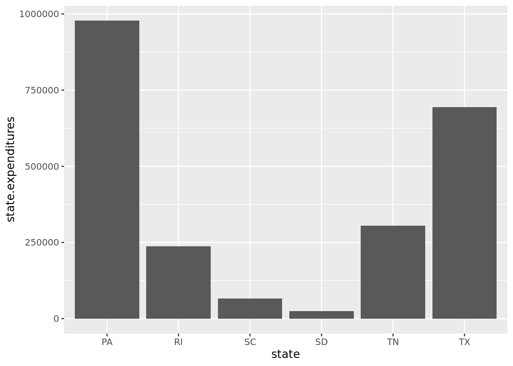

library(gapminder) #this is a dataset
library(ggplot2)
library(tidyverse)
library(DigitalMethodsData)Worksheet 4: Data Visualization
This is the fourth in a series of worksheets for History 8510 at Clemson University. The goal of these worksheets is simple: practice, practice, practice. The worksheet introduces concepts and techniques and includes prompts for you to practice in this interactive document. When you are finished, you should change the author name (above), knit your document, and upload it to canvas. Don’t forget to commit your changes as you go and push to github when you finish the worksheet.
Charts and Graphs with ggplot2()
An essential element of working with data is trying to make sense of it and communicate your findings. Frequently, the way to do that is through some kind of data visualization. This week we are going to think about how to represent information graphically. How can we highlight patterns and trends in data in a way that helps ourselves and our readers/users understand historical data?
R has many visualization packages but the most powerful of those is ggplot() which builds on the concept of a grammar of graphics. To quote Hadley Wickham, “A grammar of graphics is a tool that enables us to concisely describe the components of a graphic. Such a grammar allows us to move beyond named graphics (e.g., the scatterplot) and gain insight into the deep structure that underlies statistical graphics.” In other words, ggplot() provides a set of tools to map data to visual elements on a plot, to specify the type of plot, and to control the fine details of how that plot will be displayed.
What does that mean in practice?
Any type of plot in R has 3 necessary layers.
1) Data: A data frame with one or more variables, each one with one or more observations.
2) Aesthetic: A mapping of one or more variables to one or more visual elements on the graph. For example, you could map a variable to the x-axis, another variable to the y-axis, and a categorical variable to color so that different categories get plotted with different colors.
3) Geometry: The type or shape of the visual elements on the graph. For example, this could be a point in the case of a scatter plot, a bar in the case of a bar plot, or a line in the case of a line plot.
Lets load all the libraries we’ll use in this worksheet:
To begin, we’re going to use one of R’s built in datasets. First lets take a look at the data:
data(gapminder)- Take a look at the data. What can you say about it?
It’s a dataset arranged in long form. Contains the average life expentancy, the population, and the GDP per capita for a sampling of countries across different countries from 1952-2007 in 5 year increments. The data does not seem to be complete, however, because not every country has data for every 5 years, although so do.
This data includes variables for life exptenency and per capita GDP. Lets say we want to plot these two variables against each other for all country-years within the dataset. First we have to tell ggplot() what our data is.
p <- ggplot(data = gapminder)What happened here? A new variable, p was created but we didn’t get a plot yet. That is because we’ve told ggplot what data we’re going to use but we haven’t mapped anything to a plot yet. We need to tell ggplot what variables in the data should be represented by which visual elements in the plot. We also haven’t told it what kind of plot we want.
Mappings in ggplot are defined using the aes() function like this:
p <- ggplot(data = gapminder, mapping = aes(x = gdpPercap, y=lifeExp))In this code we gave ggplot() two arguments instead of one - data and mapping. This tells ggplot that we want the data about GDP to be mapped to the x-axis and data about life expectancy on the y-axis. The mapping = aes() argument is linking variables in our data to things you will see on the plot.
There are numerous types of aesthetic mappings. x and y values are the most common and obvious but we could also define things like color, shape, size, and line type (solid vs dashed etc.)
We can view the plot that we’ve created by calling the variable that we stored our plot in, p. What we get is an empty plot. You’ll notice that ggplot has created both the x and y-axis for us but there are not points on our plot. That is because we need to add a layer to the plot that includes the data. geom_point() helps us do that. It takes the x and y values and plots them in a scatterplot.
p + geom_point()To summarize what we did above, there were 3 steps we went through. First, tell ggplot() what our data is. Second, add mapping = aes() to map our variables to the plot. And, third, choose a geom. In this case our geom was geom_point() which created the points/data layer on our plot. A fourth step could have included adding a scale, legend, title or some other element to the graph. These are typically referred to as labs.
- Modify the above plot so that the variables it draws on are life expectancy and population. Then, use a comment to annotate the code and mark each of the 3 parts described above.
p2 <- ggplot(data = gapminder, mapping = aes(x = pop, y=lifeExp)) #Part 1: fetches gapminder as data for ggplot; Part 2: adds pop and lifeExp as variable to the plot
p + geom_point() #Part 3: adds geom_point as geom in order to create point graph
We can make this plot even more complex. Adding another value, color, to aes() we can change the color of each dot to correspond to a year. We also might want to rename the x and y-axis so that the labels have a more useful description of the variable. We can do so using the labs function.
ggplot(data = gapminder, mapping = aes(x = gdpPercap, y=lifeExp, color=year)) + geom_point() + labs(x="GDP Per Capita", y="Life Expectency in Years", title="Life Expectency and Per Capita GDP by Year") - Using the same plot above, can you edit the code to add a trend line? (Hint: You’ll need to add another geom)
ggplot(data = gapminder, mapping = aes(x = gdpPercap, y=lifeExp, color=year)) + geom_point() + labs(x="GDP Per Capita", y="Life Expectency in Years", title="Life Expectency and Per Capita GDP by Year") + geom_smooth()`geom_smooth()` using method = 'gam' and formula = 'y ~ s(x, bs = "cs")'Warning: The following aesthetics were dropped during statistical transformation: colour
ℹ This can happen when ggplot fails to infer the correct grouping structure in
the data.
ℹ Did you forget to specify a `group` aesthetic or to convert a numerical
variable into a factor?- The file below contains data about the population of cities in 1930 and their recreation expenditures. Can you create a scatter plot from this data?
rec <- read.csv(file = "https://raw.githubusercontent.com/regan008/DigitalMethodsData/main/raw/Recreation-Expenditures.csv")
ggplot(rec, mapping = aes(x = population, y = total_expenditures, color = population)) + geom_point() + labs(x="Population", y="Total Expenditures", title="Recreation Expenditures and Population of American Cities in 1930") + theme( axis.text.x = element_blank(), axis.text.y = element_blank()) + geom_smooth()`geom_smooth()` using method = 'loess' and formula = 'y ~ x'Warning: The following aesthetics were dropped during statistical transformation: colour
ℹ This can happen when ggplot fails to infer the correct grouping structure in
the data.
ℹ Did you forget to specify a `group` aesthetic or to convert a numerical
variable into a factor?The geom_point() function allows us to create scatterplots but its not the only geom within ggplot2().
Histogram
A histogram is a graph used to represent the frequency distribution of a few data points of one variable. Histograms often classify data into various “bins” or “range groups” and count how many data points belong to each of those bins.
recreational.data <- read.csv("https://raw.githubusercontent.com/regan008/DigitalMethodsData/main/raw/Recreation-Expenditures.csv")
ggplot(recreational.data, aes(x = population)) +
geom_histogram()`stat_bin()` using `bins = 30`. Pick better value with `binwidth`.- Use the Boston Women’s voters dataset to create a histogram of the age of voters.
data("BostonWomenVoters")
ggplot(BostonWomenVoters, aes(x = Age)) + geom_histogram()`stat_bin()` using `bins = 30`. Pick better value with `binwidth`.Warning: Removed 75 rows containing non-finite values (`stat_bin()`).- By default,
geom_histogram()is choosing the number of bins. Can you change the number of bins or the bin width? (Hint: How might you look up the options for this function?)
data("BostonWomenVoters")
ggplot(BostonWomenVoters, aes(x = Age)) + geom_histogram( ,binwidth = .7)Warning: Removed 75 rows containing non-finite values (`stat_bin()`).data("BostonWomenVoters")
ggplot(BostonWomenVoters, aes(x = Age)) + geom_histogram( ,bins = 8)Warning: Removed 75 rows containing non-finite values (`stat_bin()`).- Explain, what does changing the number of bins do?
The default is set at 30 bins so decreasing the number of bins for this graph will create a simplified graphic - it will appear as if each age group has one count.
Barplots
A barplot (or barchart) is one of the most common types of graphic. Whereas a histogram shows the number of entries in each “bin” - a bar chart shows the relationship between a numeric and a categorical variable. Each entity in the categorical variable is represented as a bar. The size of the bar represents its numeric value.
sc.rec <- recreational.data %>% group_by(state) %>% summarize(state.expenditures = sum(total_expenditures))
ggplot(sc.rec, aes(x = state, y = state.expenditures )) +
geom_col()
- Using the
gayguidesdata, create a bar chart that shows the number of locations in 1980 in South Carolina, Georgia, and North Carolina.
data ("gayguides")
south80 <- gayguides %>% group_by(state) %>% filter(Year == 1980) %>% filter(state %in% c("SC", "GA", "NC")) %>% summarize(count = n())
ggplot(south80, aes(x = state, y = count)) + geom_col()- Using the
gayguidesdata, plot the number of religious institutions in each state.
data ("gayguides")
rel.inst <- gayguides %>% group_by(state) %>% filter(type == "Religious Institution") %>% summarize(count = n())
ggplot(rel.inst, aes(x = state, y = count)) + theme(axis.text.x=element_text(angle=90,hjust=1)) + geom_point() + geom_segment(aes(x=state, xend=state, y=0, yend=count))- Formulate a question based on a dataset of your choice. That question should be something that would be appropriately answered by a bar chart. What is the question you want to explore?
What is the number of Boston women voters whose occupation is listed as a housewife by their birth country?
- Now write the code to answer that question and use comments (
#) to explain your thinking as you go.
data("BostonWomenVoters") #calls BostonWomenVoters dataset
housewife.by.country <- BostonWomenVoters %>% #begins function housewife.by.country
filter(Occupation == "Housewife") %>% #filters by occupation to show only housewives
group_by(Country.of.Birth) %>% #groups by country of birth
summarize(count = n()) %>% #counts the number of housewives by country
print #prints the subset# A tibble: 37 × 2
Country.of.Birth count
<chr> <int>
1 Armenia 1
2 Armenia (Turkey) 1
3 At sea 1
4 Austria 1
5 Azores 1
6 Belgium 1
7 British West Indies 9
8 Canada 341
9 Chile 1
10 Danish West Indies 1
# ℹ 27 more rowsggplot(housewife.by.country, aes(x = Country.of.Birth, y = count)) + theme(axis.text.x=element_text(angle=90)) + geom_col()Line Charts
Line charts excel at demonstrating trends over time.
data(gayguides)
gg.byyear <- gayguides %>% group_by(Year) %>% summarize(count = n())
ggplot(gg.byyear, aes(x = Year, y = count)) +
geom_line()- Create a line chart that shows the number of religious institutions in the gay guides data over time.
data ("gayguides")
rel.inst.by.year <- gayguides %>% group_by(Year) %>% filter(type == "Religious Institution") %>% summarize(count = n())
ggplot(rel.inst.by.year, aes(x = Year, y = count)) + geom_line()- In the gayguides data, danger or risk is indicated in several different ways. Sometimes it through the use of an amenity categorization of (HOT) or (AYOR) which meant that these locations were frequented by police and should be used at your own risk. Other times, locations were listed as “inquire locally” in either the description or address field. There are many reasons a location would have requested to have been listed this way. Many times, it was due to harassment and the location deemed it too dangerous to publicly list its location. Can you create a subset of the gay guides data about risk and then use it to create a chart about the usage of these indicators over time?
data ("gayguides")
southern.risk <- gayguides %>% group_by(Year) %>% filter(state == "SC" | state == "NC" | state == "GA") %>% filter(description %in% c("AYOR", "HOT", "Fuzz")) %>% summarize(count = n()) %>% print# A tibble: 0 × 2
# ℹ 2 variables: Year <int>, count <int>ggplot(southern.risk, aes(x = Year, y = count)) + geom_line()Faceting
Unlike the previous exmaples, facet_wrap is not a geom. It splits the chart window in several small parts (a grid), and displays a similar chart in each section. Each section usually shows the same graph for a specific group of the dataset. For example, remember the line chart above that graphed the number of locations in the gayguides data across each year? We can facet that by state to see the number of locations in each state in each year.
gg.byyear <- gayguides %>% filter(state == "SC" | state == "NC" | state == "GA") %>% group_by(state, Year) %>% summarize(count = n())`summarise()` has grouped output by 'state'. You can override using the
`.groups` argument.ggplot(gg.byyear, aes(x = Year, y = count)) +
geom_line() + facet_wrap(~state)- Using the state recreation data, can you create a chart that outlines the total expenditures in South Carolina by city?
data(rec)Warning in data(rec): data set 'rec' not foundSC.City.Exp <- rec %>% filter(state == "SC") %>% group_by(population, total_expenditures, city) %>% summarize(count = n())`summarise()` has grouped output by 'population', 'total_expenditures'. You can
override using the `.groups` argument.ggplot(SC.City.Exp, aes(x = population, y = total_expenditures)) +
geom_line() + facet_wrap(~city)`geom_line()`: Each group consists of only one observation.
ℹ Do you need to adjust the group aesthetic?
`geom_line()`: Each group consists of only one observation.
ℹ Do you need to adjust the group aesthetic?
`geom_line()`: Each group consists of only one observation.
ℹ Do you need to adjust the group aesthetic?
`geom_line()`: Each group consists of only one observation.
ℹ Do you need to adjust the group aesthetic?
`geom_line()`: Each group consists of only one observation.
ℹ Do you need to adjust the group aesthetic?
`geom_line()`: Each group consists of only one observation.
ℹ Do you need to adjust the group aesthetic?
`geom_line()`: Each group consists of only one observation.
ℹ Do you need to adjust the group aesthetic?
`geom_line()`: Each group consists of only one observation.
ℹ Do you need to adjust the group aesthetic?- Using the gayguides data can you select 5 types of locations and chart the number of each type between 1965 and 1980?
gg.by.type <- gayguides %>% filter(type == "Restaurant" | type == "Bars/Clubs" | type == "Cruising Areas" | type == "Religious Institutions" | type == "Bats") %>% filter(Year >= 1965 & Year <= 1980) %>% group_by(type, Year) %>% summarize(count = n())`summarise()` has grouped output by 'type'. You can override using the
`.groups` argument.ggplot(gg.by.type, aes(x = Year, y = count)) +
geom_line() + facet_wrap(~type)- Using this recreation dataset from last week, can you find the average number of volunteer and paid workers over time?
rec.workers <- read.csv("https://raw.githubusercontent.com/regan008/DigitalMethodsData/main/raw/RecreationData-Wide.csv")
data (rec.workers)Warning in data(rec.workers): data set 'rec.workers' not foundVol.and.Pd <- rec.workers %>% group_by(type_of_worker) %>% summarise(count = n())
#ggplot(Vol.and.Pd, aes(x = X1930, y = count)) +
#geom_line() + facet_wrap(~type_of_worker)Practice
In the slots below use the datasets for class (or a dataset of your choice) to create a plot. The plot you create in each of these three examples should try to make some kind of historical observation. After you finish creating the plot, write a short paragraph that explains what kind of observation you were trying to make and what your plot demonstrates.
- Plot 1
data("BostonWomenVoters")
BWV.Students.By.State <- BostonWomenVoters %>% filter(Occupation == "Student") %>% filter(Country.of.Birth == "United States") %>% group_by(State.or.Province.of.Birth) %>% summarize(count = (State.or.Province.of.Birth)) %>% print()Warning: Returning more (or less) than 1 row per `summarise()` group was deprecated in
dplyr 1.1.0.
ℹ Please use `reframe()` instead.
ℹ When switching from `summarise()` to `reframe()`, remember that `reframe()`
always returns an ungrouped data frame and adjust accordingly.`summarise()` has grouped output by 'State.or.Province.of.Birth'. You can
override using the `.groups` argument.# A tibble: 22 × 2
# Groups: State.or.Province.of.Birth [8]
State.or.Province.of.Birth count
<chr> <chr>
1 Iowa Iowa
2 Maine Maine
3 Maine Maine
4 Maine Maine
5 Massachusetts Massachusetts
6 Massachusetts Massachusetts
7 Massachusetts Massachusetts
8 Massachusetts Massachusetts
9 Massachusetts Massachusetts
10 Massachusetts Massachusetts
# ℹ 12 more rowsggplot(BWV.Students.By.State, aes(x = State.or.Province.of.Birth)) + theme(axis.text.x=element_text(angle=90)) + geom_bar()Plot 1 explanation: >I want to know the dispersion of home states of the women who were registered to vote in Boston in 1920 whose occupation was listed as a student. I need to filter by occupation, then by birth county to see only American-born voters. Then I need to group by state of birth. The plot demostrates the scarcity of women students in Boston in 1920 and that the vast majority of students are born in Boston.
Plot 2
data("gapminder")
gm.Americas <- gapminder %>% filter(continent == "Americas")
ggplot(gm.Americas, mapping = aes(x = gdpPercap, y=lifeExp, color=country)) + geom_point() + labs(x="GDP Per Capita", y="Life Expectency in Years", title="Life Expectency and Per Capita GDP by Year") + geom_smooth()`geom_smooth()` using method = 'loess' and formula = 'y ~ x'Plot 2 explanation: >I want to plot the life expectency and GDP by year of the countries in the Americas in the gapminder dataset. I filtered the dataset by continent and then plotted the GDP(x) and the life expectency(y). By changing the color to country it somewhat shows the individual countries growth over time, although it’s probably too cluttered to be very useful.
Plot 3. For this one, try a different kind of plot. Check out a useful gallery here. (For this week, avoid choosing a map. We’ll talk more about maps and geographic data over the next two weeks.)
data("gapminder")
gm.Americas <- gapminder %>% filter(continent == "Americas") %>% filter(year == "1952" | year == "1972" | year == "1992" | year == "2002")
ggplot(gm.Americas, mapping = aes(x = gdpPercap, y=lifeExp, label = country)) + geom_label() @Plot 4 explanation: >Plots the life expectancy and GDP of countries in the Americas for the years 1952, 1972, 1992, and 2002. Putting the names of the countries allows for a more striking visualization of the correlation between the two variables.
Union.Incidents <- read.csv("https://docs.google.com/spreadsheets/d/e/2PACX-1vSRFwjcJ0Xnnic2NrdWXC5ld2LkDwJAfRCU7lq0ohhYIaPjhd-s-MfAdBM0sgarXzH-qoCCkwr4yRns/pub?output=csv")
data (Union.Incidents)Warning in data(Union.Incidents): data set 'Union.Incidents' not foundUnion.Words <- Union.Incidents %>% select (ArticleTitle, DiscriptionOfOccurence, ConsequenceOfOccurence)
#ggwordcloud(Union.Incidents, aes(label = Union.Words))
#ggplot(Union.Incidents, aes(label = "ArticleTitle", "DiscriptionOfOccurence", "ConsequenceOfOccurence")) +
#geom_text_wordcloud() +
#scale_size_area(max_size = 40) +
#theme_minimal()- Plot 4 explanation: >Creates a wordcloud using the article title, description and consequence columns for the dataset I created about anti-Confederate incidents reported in the Greenville Enterprise.